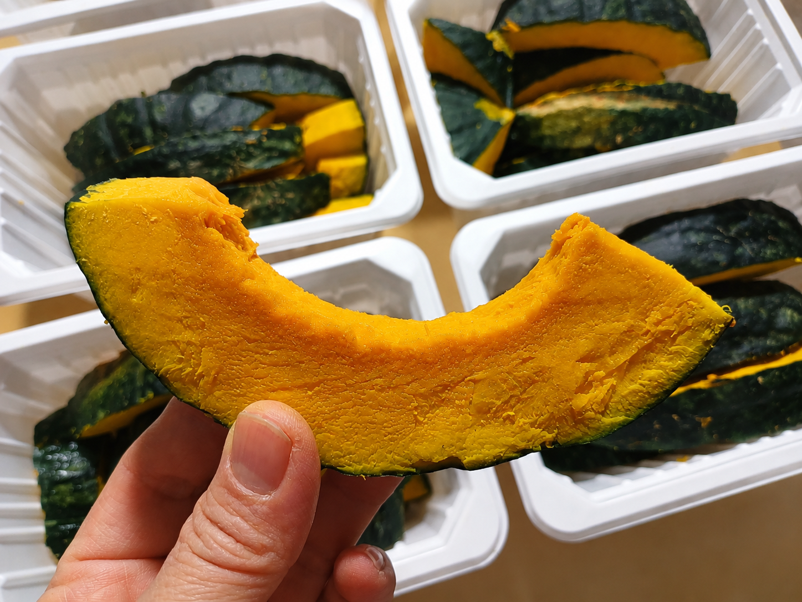
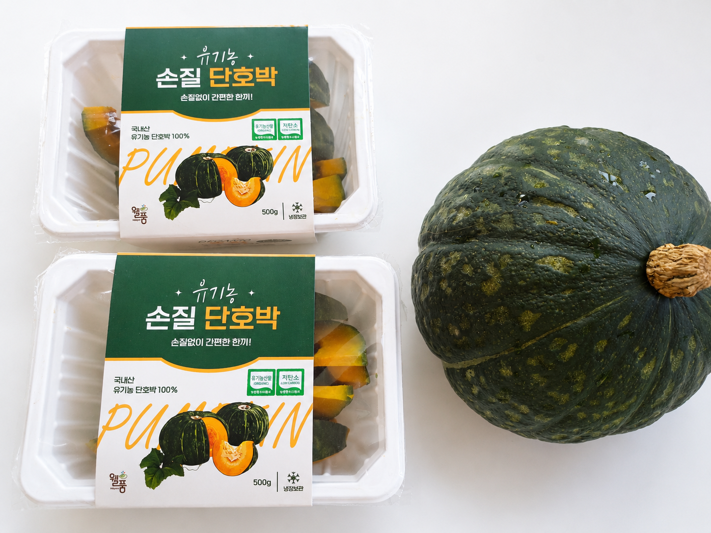
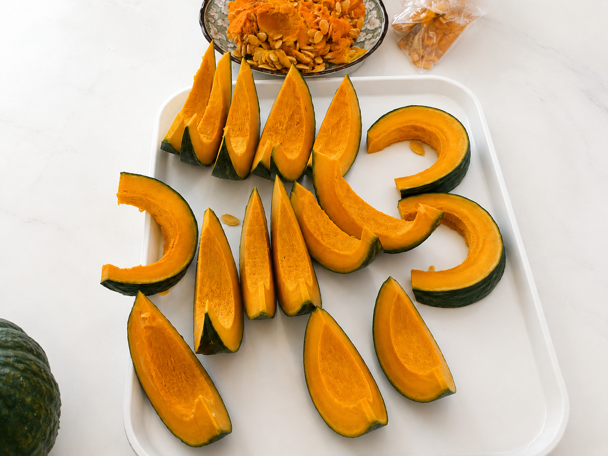
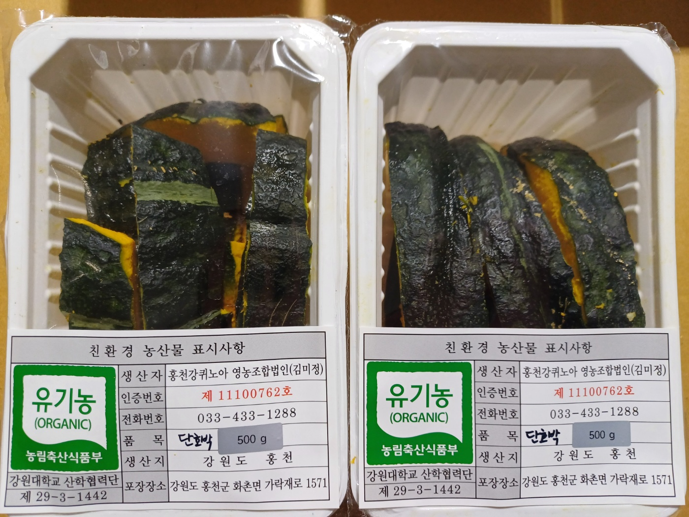
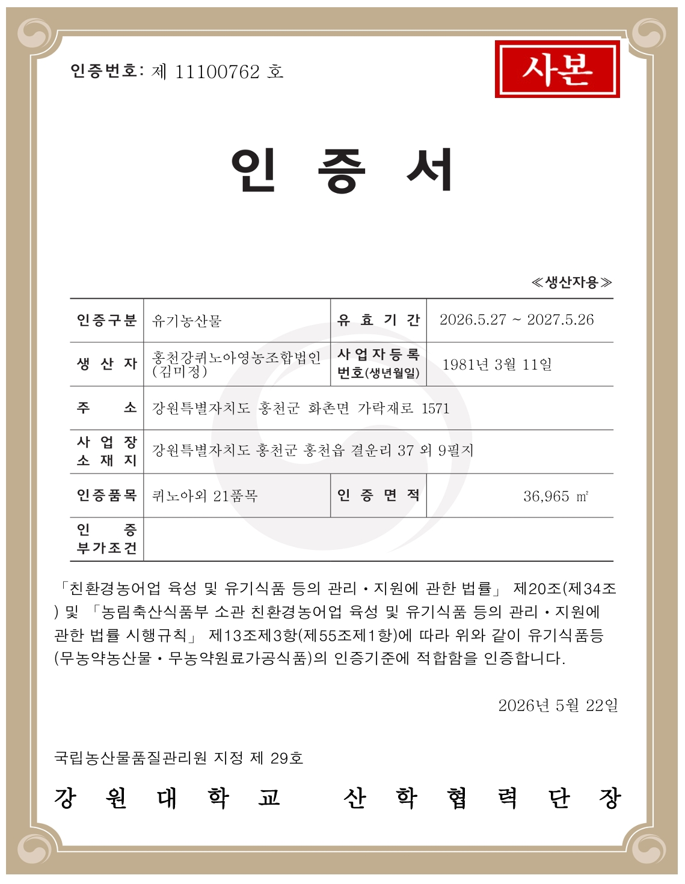
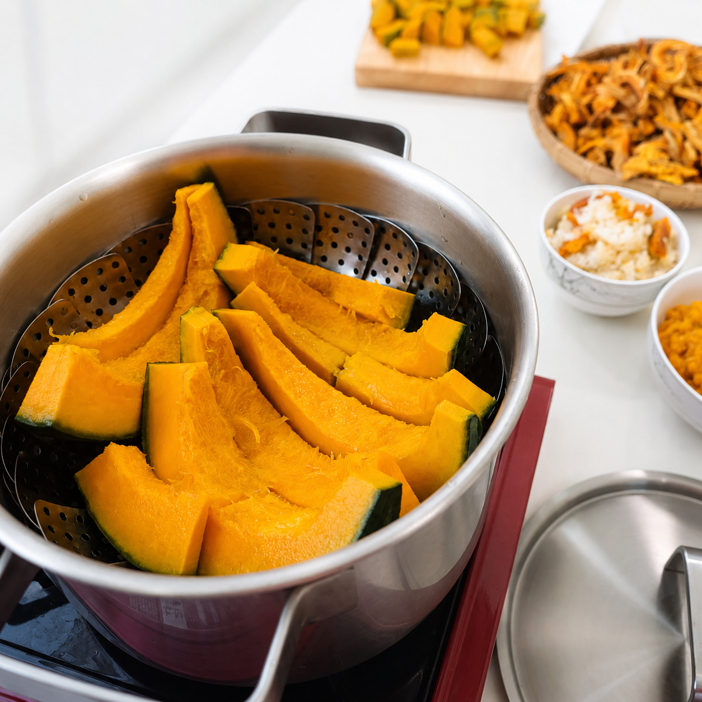
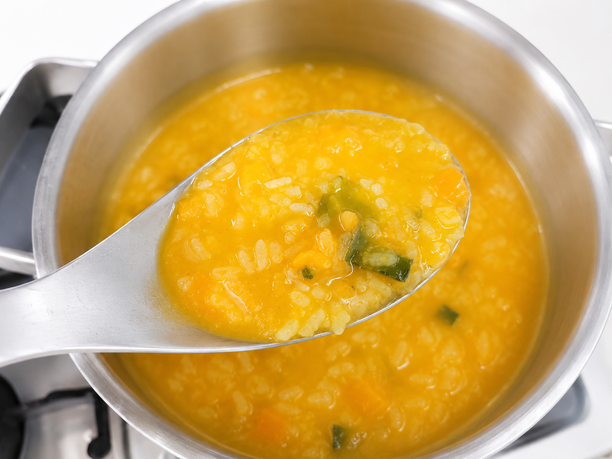
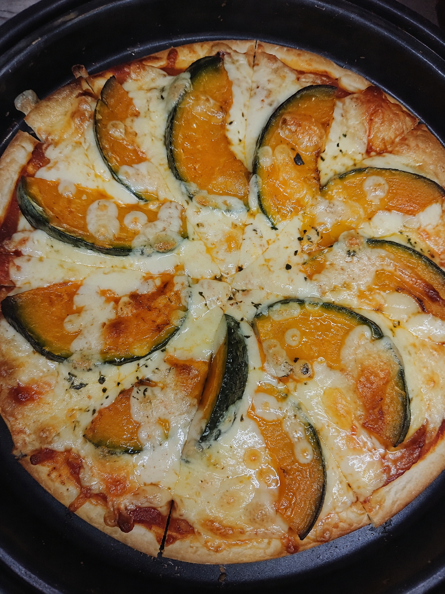
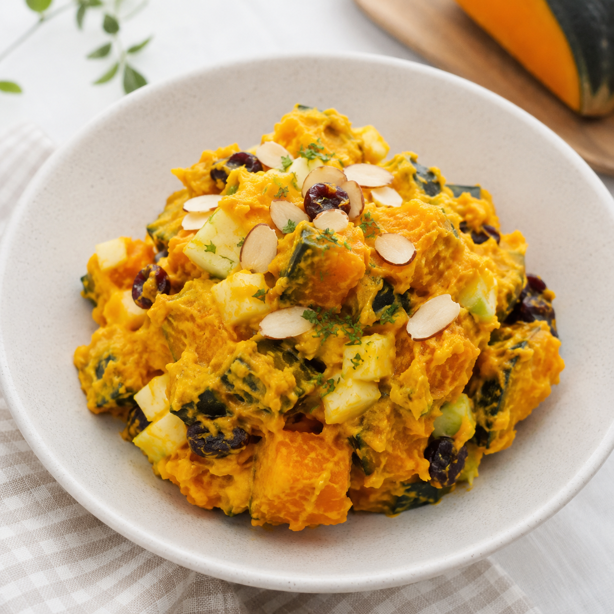
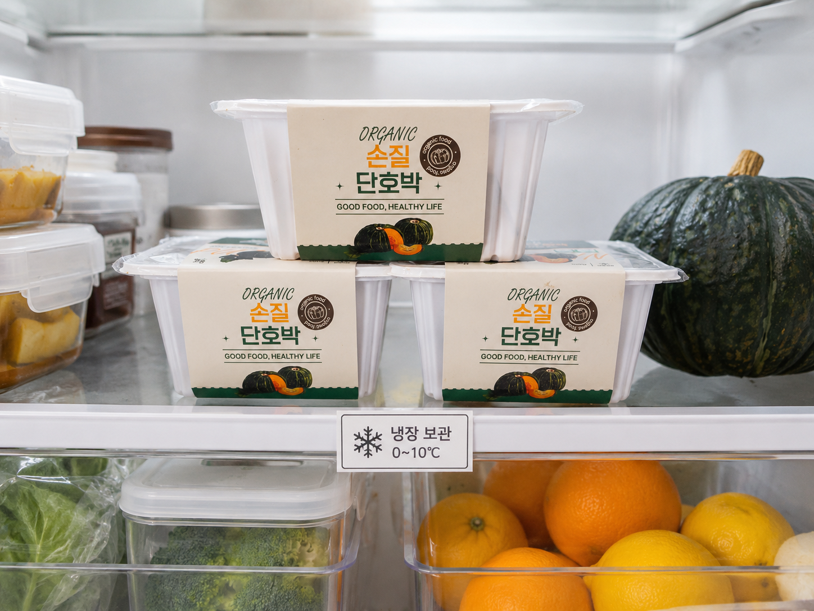

ORGANIC PRE-CUT KABOCHA
씻고 자르는
시간을 덜어낸
유기농 손질
단호박
강원도 홍천에서 수확하고
주문 후 씨를 제거해 500g씩 포장합니다.
READY TO COOK
씨 제거와 손질은 미리,
맛있는 요리는
더 간편하게

실제 제품·포장 예시 · 포장 안의 조각 크기와 모양은 농산물 특성상 달라질 수 있습니다.
POINT 01
홍천 밤호박의 매력을
손질한 그대로
담았습니다
적당한 수분감과 포슬포슬한 식감, 밤처럼 고소한 풍미와 자연스러운 단맛을 느껴보세요. 냉동 제품이 아니어서 원물의 맛과 식감을 살려 다양한 요리에 활용하기 좋습니다.
FROM HONGCHEON
강원도 홍천 농가에서
직접 수확합니다
국내산 원물강원도 홍천 산지→주문 후 손질씨 제거·절단·포장
강원도 홍천 농가에서 수확한 단호박을 주문 후 손질하고 포장해 보내드립니다.
PREPARED AFTER ORDER
번거로운 씨 제거와
손질을
미리 정성스럽게

실제 씨 제거·손질 과정 예시 · 농산물 특성상 조각의 크기와 모양은 달라질 수 있습니다.
01원물 확인→
02씨 제거·손질→
03500g씩 포장→
04주문 상품 출고

한 팩에 500g손질한 단호박을 500g 단위로 포장합니다.
실제 500g 포장 완료 예시 · 포장 용기와 라벨 디자인은 출고 시점에 따라 달라질 수 있습니다.
ORGANIC FARMING
유기농 인증기준에 맞춰
토양부터 정성스럽게
화학비료 대신 퇴비와 인증기준에 맞는 유기질 자재 등으로 토양과 영양을 관리합니다. 병충해 관리도 일반 합성농약에 의존하지 않고 재배 관리와 사용할 수 있는 유기농업자재 등을 활용합니다.
※ 현재 유효한 생산자용 유기농산물 인증서를 확인했습니다.
ORGANIC CERTIFICATE
확인할 수 있는
유기농산물 인증
인증번호제11100762호
유효기간2026.05.27~2027.05.26
인증구분유기농산물
인증품목단호박 포함 · 판매자 확인

개인정보 비공개 개인정보 비공개 개인정보 비공개유기농산물 인증서 사본 · 공개용 상세페이지에서는 생년월일과 주소를 가렸습니다.
SIMPLE COOKING
꺼내서 찜기에 올리면
간편한 단호박 요리 준비

팩에서 꺼내기
겹치지 않게 올리기
익혀서 즐기기
※ 조각 크기와 조리기구에 따라 익는 시간은 달라질 수 있습니다.
EASY TO USE
한 팩으로 시작하는
다양한 단호박 요리

단호박 이유식·죽충분히 익힌 단호박을 단계에 맞는 재료와 함께 활용
단호박 피자부드럽게 익힌 단호박을 토핑으로 올려 간식으로 활용
단호박 샐러드익힌 단호박을 으깨거나 조각으로 넣어 한 끼 메뉴로 활용STORAGE GUIDE
보관 안내

냉장 보관 연출 예시 · 수령 후 상품 상태를 확인하고 보관 안내에 따라 보관해 주세요.
상품정보
- 상품명
- 유기농 손질 단호박
- 산지
- 강원도 홍천
- 재배방식
- 유기농
- 구성
- 500g × 1팩 / 2팩 / 3팩 / 4팩
- 손질상태
- 씨 제거 및 절단
- 보관방법
- 수령 후 냉장보관, 장기간 보관 시 냉동보관
※ 세부 상품정보와 유기농 인증정보는 실제 판매 상품의 표시사항을 기준으로 최종 확인해 주세요.